* logo design *

* symbol logo *

바다와 등대를 합쳐 끝없이 도전하고 성장하는
무한한 가능성을 표현한 심볼로고 제작
SKLL - photoshop / lllustrato
PREIOD - 2024.07
자기자신의 장.단점과 특징을 파악하고 , 자신을 이해하고자 이를 활용한 IDENTITY분석을 통한 디자인입니다.
해당 프로젝트를 통해 웹디자이너로서의 잠재력을 표현하고자 하였습니다.
나에 대한 주관적, 주변 지인 및 타인의 객관적인 평가를 통해
키워드를 도출한 후 이를 바탕으로 주제를 선정히여 심볼을 디자인 하였습니다.
바다와 등대를 합쳐 끝없이 도전하고 성장하는
무한한 가능성을 표현한 심볼로고 제작
파란색은 신뢰를 주기도 하며, 푸른 바다의 넓은 풍경을 연상시켜 많은 영감을 얻을 수 있다는 의미를 담아냈습니다.
하얀색은 묻지 않은 순수함, 새로운 시작, 밝고 긍정적인미래에 대한 희망을 담아냈습니다.
본문과 내용은 사용자가 컨텐츠를 편안하게 읽을 수 있도록 가독성을 높이고,
콘텐츠의 깔끔한 표현을 위해 Noto Sans(본고딕)을 사용하였습니다.

포인트를 줄 수 있는 요소로 세리프(Serif) 서체 특유의 정제된 느낌이 가독성을 해치지 않고 고급스러움과 신뢰감을 줄 수 있어 Abhaya Libre", serif를 사용하였습니다.